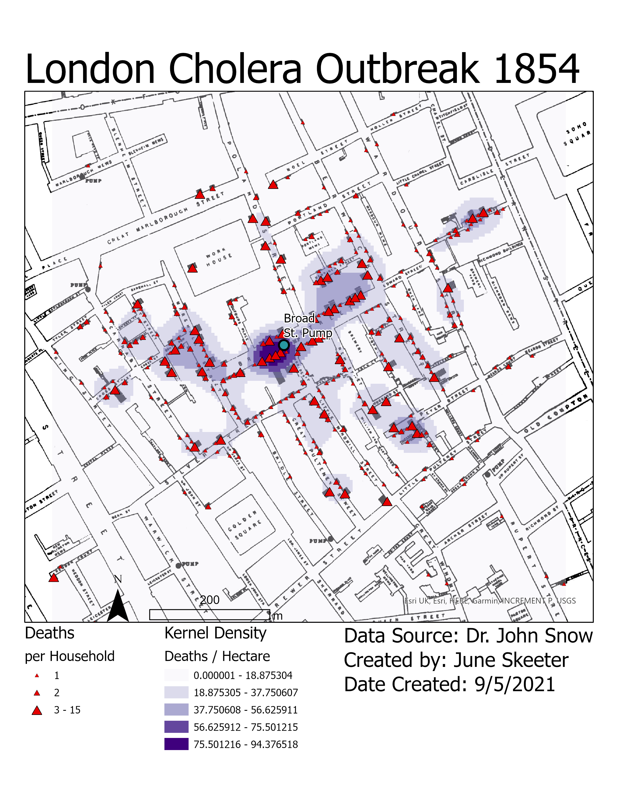

Introduction to ArcGIS Pro
Part 1: ArcGIS Pro Tutorial
To get familiar with ArcGIS Pro, you will complete an Introduction to ArcGIS Pro tutorial and watch a four other short videos. The tutorial will take about 25 minutes and give you a brief overview of the ArcGIS Pro. The videos illustrate other important aspects of the ArcGIS Pro software package and will take about 10-15 minutes to watch.
Make Your First Map
If you have purchased ArcGIS Pro, you can sign in through the UBC ArcGIS online account you created. If you are using the lab computers, and don’t already have one, create a public account:
- Click “Sign In” in the top right of this page
- Click “Create a public account” and follow the steps
Go to the Introducing ArcGISPro tutorial. Watch the short introductory video, then work through the steps. You will be submitting a map from this tutorial for credit.
- You already have a project open, so you can start with Open the project step 2 Note.
- Note, if you have trouble in “Opening the project, Step 3” for either tutorial, you can download the data for off line use instead
- When you get to “Explore Views, Step 7”, double click on the map title and add your name following the video below.
Export Your Map
Save the layout as a .pdf, name it Central_Wellington_Layout.pdf. You will upload this map to canvas. To save your layout reference the image below.
Click Share.
Click Layout Export.
Specify the output location and name your file. Its best to use your Lab1_Project workspace so you can easily find this when its time to submit you map.
Click Export.
More Tutorial Videos
ESRI offers quite a few tutorials on ArcGIS Pro. Feel free to work though them if you have time! But we’re just going to watch the overview videos from four tutorials to learn a bit more about what we can do with ArcGIS Pro. I’ve hyperlinked to each tutoral page for your reference and embeded the relevant video below each video link.
Explore your data
This tutorial shows you how you can interact with and explore data layers. You can find the tutorial instructions here or watch the video below.
Make a layout
This tutorial shows you how you can use map layouts to visualize data. You can find the tutorial instructions here or watch the video below.
Use Geoprocessing Tools
This tutorial shows a few of the ways you can analyze geospatial data and see how different layers interact. You can find the tutorial instructions here or watch the video below.
Create Points on a Map
This tutorial shows how you can create a feature class and populate it with point features. You can find the tutorial instructions here or watch the video below.
Part 2: Foundations of Epidemiology
We are going to replicate one of the foundational studies in Epidemiology and the closely related field of Health Geography using modern GIS techniques. Before we get into the the analysis, lets get some context behind why this is important.
1854 London Cholera Outbreak
Dr. John Snow was a physician practicing in London where cholera outbreaks were a frequent occurrence due to poor sanitation practices. Dr. Snow was a skeptic of the miasma theory and a proponent of germ theory.
- In 1849 he proposed cholera that it was spread by fecal contaminated water, after comparing cholera rates between London districts supplied by different water companies.
Five years later, during an outbreak in London’s SoHo neighborhood in 1854, Dr. Snow was able to identify the point source of the outbreak using a hand-sketched map.
- He recorded each case of cholera in the area using a dash, and recorded each water pump with a circled dot, creating what today would be called a dot map.
- By recording clusters of disease, and conducting interviews, Snow was able to trace most cases of the outbreak to a single water pump, located on Broad st.
Using his map, Dr. Snow was able to convince the local council to remove the pump handle and the outbreak subsided.
- Despite this, the medical community in London continued to reject the idea that Cholera was caused by fecal contamination for another twenty years.

Setting up a Project
When ArcPro opens choose the Map under Blank Templates as shown below then create your new project. I’ve named mine Lab1_Project so I can easily identify it. This will be the name of the folder your project is saved in. Set the location to an appropriate workspace.
- I am working on my own computer, and my workspace workspace is “C:\2021_S1”. This is the location where the project folder will be reside. If you are working on a lab computer, you should put your project in C:.
- It is very important to familiarize yourself with the procedures for saving your work if you are working on a lab computer.
- If you are unfamiliar with the Windows operating system (OS), it might be helpful to take a few moments to learn about the differences between Windows and the OS (Mac, Linux) you are used to working with. Once you set up a new project, close ArcGIS Pro for now.
Geodatabases
By default, ArcPro creates a geodatabase with every new project. You will see one called Lab1_Project.gdb in your project folder. See the definitions below for important info about geodatabases.
Geodatabase: A file management structure that is unique to ESRI products. You don’t have to store your data in a geodatabase (.gdb), but they have some enhanced functionality that makes them better than regular folders in some circumstances. One helpful thing we can do in a .gdb, is create a feature dataset to store our census data.
Feature Dataset: A collections of feature classes that are all in the same coordinate system. When you add a data to a feature dataset, it will automatically be projected into the coordinate system we specify. This can help us avoid making mistakes like working with data that is in the wrong coordinate system!
Feature Class: A vector data layer stored in a geodatabase. Its a special file type created by ESRI to store data effectively within ArcGIS Pro. When vector data layers are not stored in a geodatabase, they are stored in other formats, such as shapefiles or geojsons.
Download Data
Lets download the data we need and put it in the Lab1_Project folder you just created. Click the download link. If a pop up appears, choose save, the file will be saved in the downloads folder.
Extract the Data
Open the windows file explorer (folder on bottom ribbon or search the start menu). Navigate to the downloads folder. You will see a folder called “CholeraOutbreak_1854.gdb”, note the type “Compressed (zipped) Folder” and size 11709 KB. Right click on the CholeraOutbreak_1854.gdb, choose a zip file manager, and select “Extract files”.
- Zip files (.zip) are a method for compressing data so it can be stored and transfered more efficiently. However, to work with the data, we have to extract it.
- On my computer, the 7-Zip is the .zip file manager. If you are working on the geography department computers, you can uses PeaZip instead. The specific options might differ, but the general principal is the same.
Save it to your Project Folder!
In the pop up window, set your Lab1_Project folder as the Extract to location.
- The lab data is now downloaded and stored in your project folder.
Working with Historical Data
We are going to be working with the hand drawn cholera map created by Dr. Snow showing cholera cases in SoHo. I’ve gone thought most of the steps of extracting the data for you already. This section walks you through the process of how it is typically done.
Georeferencing
In order to get a historical map into a GIS, it has to be scanned and then georeferenced. To georeference a map like, locations on the scanned image (eg. intersections) can be matched up to known reference points.
- With enough matching points (>=3), an accurate transformation can be calculated and the paper map can be referenced to the proper location. I’ve done this for you to save some time.
- Watch the video linked below for a quick overview of georeferencing.
Once a map has been georeferenced, we can extract information from it. On Dr. Snow’s map, the key pieces of information are the cholera deaths and water pumps. To get this information into the GIS, the points have to be manually identified and entered. This process is known as digitizing, and was explained in the Create points on a map video. We’ll get some practice digitizing in a bit.
Adding a Feature Dataset
The cholera deaths have already been digitized. Follow the steps as outlined and refer to the video below to add the Deaths data to the map.
- Open the catalog pane and navigate to your Lab1_Project.
- Note This is what I named my project, your project may have a different name depending on how you set things up in the Getting Started step on the Introduction tab.
- ArcGIS Pro shows your project folder by default in the Folders tab in the Catalog pane on the right. To view other folders, you have to add folder connections. We’ll cover this later in the semester.
Find the Deaths feature class, which is located in the SourcePoints Feature Dataset in the CholeraOutbreak_1854.gdb. Click and drag the deaths feature class onto the map area.
Right click again and open the attribute table to explore the data a bit.
- You can double click count to sort in ascending/descending order.
- Click a row to select a specific feature (eg. identify location with most deaths).
Inspect the Data
Right click “COUNT” in the attribute table and choose “Statistics” as shown below. A chart window and a properties pane will open. Use the statistics in the properties pane to answer the question.
Creating a New Feature Dataset
Using the steps outlined in the video on creating point features, we are going to create a new feature class called “Broad St. Pump” and digitize the location of the pump. Follow the steps as outlined and refer to the video below.
Right click on SourcePoints in the catalog pane and click New > Feature Class.
In the new window that opens, give the new feature a name and alias, set the type to point, and click Next.
- Arc Pro does not allow Feature Classes to have certain characters (eg. spaces) in file names. But you can set the alias to display spaces
- Feature classes can take multiple different types. The three most common, which we will mainly be concerned with are: Points, Lines, and Polygons
- We’ll discuss the differences in detail in lecture
- Add a new field called Name with type text then click Next.
- Fields allow us to store information about the features in a table. In this case, the only information we want to store is the name. We will encounter circumstances later where we store many attributes for each feature.
- Note the Spatial Reference System then click Finish.
- Feature Datasets require that all feature classes within them have the same Spatial Reference System, so the projection is automatically set to that of the SourcePoints feature dataset (WGS 1984 Web Mercator)
- If you aren’t working in a preexisting feature dataset, this would be your chance to specify it
- We don’t need to concern ourselves with the options on the next three pages for now.
Digitizing a Point
Now we are going to digitize the location of the Broad St. Pump. Follow the steps as outlined and refer to the video below.
Find the Snow_cholera_map in the CholeraOutbreak_1854.gdb, click and drag it onto the map.
Open the Edit tab and click Create, in the create pane that appears, click Broad St. Pump and choose point from the options that appear.
- The edit tab allows us to create, modify, save, and delete data among other things
- Create is used specifically to add new features to an existing feature data set.
- Right now we’re creating a single point feature. We’ll learn how to digitize lines and polygons later on in the semester.
- Click on the location of the Broad St. pump as shown on Dr. Snow’s original map, then save your edits.
- Zoom into the Broad St. area on the map, click on the location of the pump to add a point feature.
- If you make a mistake, you can hit ctrl + z to undo your additions
- Note Snapping is sometimes set to on by default. It will cause the cursor to jump to the nearest feature in another layer (eg. Deaths). It is useful in some situations, but not here. It can be turned off by clicking snapping in the Edit tab.
- Save your edits after every change to make them permanent.
- Open the attribute table and name the newly created feature “Broad St. Pump”
- You can type directly into the attribute table to edit the newly created features Name value, which is blank for now.
- Clicking a new row in the attribute table will add and “empty” feature with no spatial component.
- You can right click on a row to delete that feature
- Save your edits to make them permanent.
Save your project.
Click Save in the top left of the Arc Pro window. ArcPro will auto save for you every so often, but its good practice to get in the habit of saving everything regularly anyway just incise.
Adjusting Symbology
Now we are going to change the symbology of the Deaths and Broad St. Pump so that they are more visible. Follow the steps as outlined and refer to the video below.
- Click on Deaths then click the Appearance tab, choose Single Symbol from the Symbology drop down.
- The appearance tab let’s you make changes to the way data is represented on your map.
- In the symbology pane that opens, under gallery, choose the red triangle, then adjust the properties to fine tune the symbology. Select the Broad St. Pump and symbolize the it as a larger circle marker in a different color.
- You can change various properties of the point symbols to make them easier to see (eg. outline width, point size).
- Size, color, and shape all convey meaning. We’ll discuss the various implications of symbology later in the semester.
Adding Labels
Now we are going to add a label to Broad St. Pump so the map reader can identify it. Follow the steps as outlined and refer to the video below.
- Right click on Broad St. Pump and click Label.
- Note a label appears next to the point but it isn’t very easy to read.
- Right click on Broad St. Pump again and click Labeling Properties, change the font size and add a halo to make the label easier to read.
- Halos can make your text stand out against a background. Increasing the font size also helps the text stand out.
- You can change many other aspects of the label text. Play around with the properties to see what happens when you make changes. Hit apply after each change.
Symbolize by Count
Lets adjust the symbology so the Deaths feature class points are scaled by the number of deaths at each address. Follow the steps as outlined and refer to the video below.
- Click on Deaths and navigate to symbology. Select graduated symbols from the drop down.
- Graduated point symbols are sized differently to convey magnitude/intensity.
- Play around with the symbology options.
- Clicking template allows you to select a the point marker type.
- The Size and Classes allow you to decide how many classes and how small-large the points should be.
- The Class tab allows you to specify class breaks manually.
Save your project.
Click Save in the top left of the Arc Pro window.
Spatial Analysis
We already know the Broad St. pump was the source of the outbreak, but lets explore a couple analysis techniques we could use to identify the source of an outbreak.
Measures of Central Tendency
There are numerous ways to analyze the spatial distribution of a dataset. The Mean Center and Directional Distribution are two of the simplest measures. Mean center gives you a single point around which the directional distribution creates an ellipse to show directional trends in the data. Don’t calculate these statistics, just skim the linked pages and look at the example below to understand what these methods do.
- They can be weighted (eg. by the number of deaths per address).
- These measures roughly identify the Broad St. Pump as the source of the outbreak, as shown in the figure below.
- However, they are rudimentary metrics at best. They could be used to identify multiple point sources for example.
Kernel Density
A more advanced method is Kernel Density, which gives you a magnitude (eg. number of deaths) per unit area (eg. hectare). Follow the steps as outlined and refer to the video below to calculate the Kernel Density of cholera deaths in Soho.
- Click the Analysis tab and select Tools. In the Geoprocessing pane, search for and open the Kernel Density tool.
- The Geoprocessing pane is where you can find all the different spatial analysis tools in ArcGIS Pro.
- Set Deaths as the input and COUNT as the Population Field.
- The population field weights the calculations by the number of deaths at each address.
- Rerun the analysis multiple times, playing around with different Output cell sizes and Area units. When you are done exploring the effects of cell size and units, calculate the Kernel Density with a cell size of 5 and unit of Hectares.
- A Hectare is 10,000 m2, or about the area a small city block.
Save your project.
Click Save in the top left of the Arc Pro window.
Making a Map
Now that you’ve used kernel density to identify the location of the pump, we’ll make our first map using a layout and add all the necessary map elements.
Creating a Layout
Follow the steps as outlined and refer to the video below to add a new layout.
- Click the Insert tab and select Layout. Choose an appropriate page size. Letter size is good for most maps in this class, only use the bigger ones if you are making a poster.
Adding Map Elements
Follow the steps as outlined and refer to the video below to add the necessary map elements. These map elements should be present on each map you make for the class unless otherwise specified.
Legend
Add a legend. Remove any unwanted items from the legend using the check boxes. Change the symbology of Kernel Density to 5 classes so it fits on the legend better and edit the layer name to make it more clear. Reorder the legend items if desired. * Legends items have many different settings we can fine tune. For now, we’ll just change a few. * You can add/remove & reorder legend items using the check box on the right. * Changing the number of classes in the Kernel Density layer makes it fit better. * Slowly double clicking on an item in the table of contents on the left allows you to edit the text. You can change layer names so they make more sense.
Title
Add a a title using the Straight Text (see video). Give your map an appropriate title and font size.
- Titles should be concise and descriptive.
- They should be the largest font element on the map
Source Statement
Use the same procedure to add a data source, creator name, and date to the map.
- It is important to credit data sources.
- List yourself as the creator.
- Add a date so the reader knows when the map was created.
- The credit text can be smaller and “tucked away” at the bottom of the map.
Scale Bar and North Arrow
Add a north arrow & scale bar
- Make sure your units are in metric!
Export Your Map
Save the layout as a .pdf, name it Kernel_Density.pdf. You will upload it to canvas.
- Your map should look something like the map shown below. Different colors, element sizes, etc. are fine. But it should have all the map elements listed above.

Save your project.
Click Save in the top left of the Arc Pro window.
- If you are working on a Geography Department Lab computer, make sure to save your work the the H:/ drive and log off properly. See the video of on the Lab Details page on canvas for a more detailed explanation.